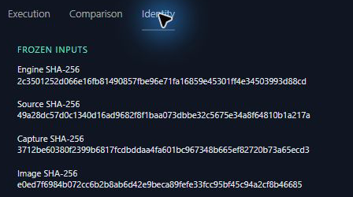
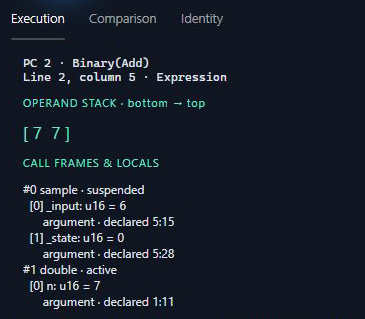
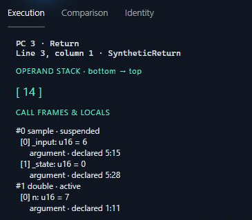

Kajo Lab 101
From Rust source to KAF1.
Follow a short Rust program into a 124-byte program image, then step the Kajo CPU as it turns 7 into 14.
Use an existing Windows copy of Kajo Lab to follow the app steps with the Pico unplugged. The decoded image, step table and prediction exercise also work on this page without Lab.
Start with the Rust source.
When Lab replays an observation, the guest starts at sample. Here it calls double with a fixed number, 7. The recording supplies an observation to replay, while the code supplies the number to double.
fn double(n: u16) -> u16 {
n.wrapping_add(n)
}
pub fn sample(_input: u16, _state: u16) -> u16 {
double(7u16)
}Lab’s guest compiler translates a supported subset of Rust into instructions for the Kajo CPU. It stores those instructions and the information needed to load them in a KAF1 program image.
What’s inside the 124 bytes?
The first four bytes spell KAF1. The rest tells the CPU what to run and where to start.
- Header 16 bytes
- Version 1. Two functions, seven instructions. Starting function
#1issample. - Function table 80 bytes
#0 doubleuses instructions 0–3 and takes one argument.#1 sampleuses 4–6 and takes two.- Instruction table 28 bytes
- Seven records of four bytes each. Instruction 4 is
Literal(7). It puts 7 on the operand stack.
At instruction 4 the bytes are 01 00 07 00. The first byte, 01, selects Literal. The last two, 07 00, encode 7.
Inspect the file with the command-line tool
Run these in the folder containing double.rs and double.kaf. If kajo-frame isn’t on your PATH, use the full path to Lab’s Guest/kajo-frame.exe. Give the new image a fresh filename.
kajo-frame inspect double.kaf
kajo-frame verify double.kaf
kajo-frame compile double.rs double-local.kaf --entry sampleStep the Kajo CPU in Lab.
- Choose Open recording or session… and open
Night-Light-Pico.capture. With that recording selected, go to Program → Rust guest. If the replay header shows a different recording, choose Use Signals recording. - Select Slew-limited knob · ON at 140 so Lab shows the numeric result as state. Paste the Rust source or choose Open .rs… and load
double.rs. - Set Observation to 1 and choose Pause before observation. This prepares the guest from the Rust source. Open Identity to see Image SHA-256, the fingerprint of the compiled image.
- Return to Execution and choose Instruction step once per row in the table. The guest starts at instruction 4, the start of
sample. Lab’s PC, or program counter, tells you which instruction will run next.

A call frame holds a function’s arguments and local values. The operand stack holds numbers the next instructions can use. When sample calls double, the CPU moves 7 into double’s argument slot, n. Two Load(0) instructions copy it back onto the stack.




double.| Step | Just ran | Next PC | What to look for |
|---|---|---|---|
| 1 | Literal(7) | 5 | [7] |
| 2 | Call(0) | 0 | Empty stack. double has n = 7. |
| 3 | First Load(0) | 1 | [7] |
| 4 | Second Load(0) | 2 | [7 7] |
| 5 | Binary(Add) | 3 | [14] |
| 6 | Return from double | 6 | sample gets [14]. |
| 7 | Return from sample | — | Lab saves 14 as the new replay state. |
After the last return, Lab pauses before observation 2. Look for Replay-derived state 14 and Last callback: observation 1. The recording’s original decision is ON. The Rust replay shows OFF because its result, 14, is below the preset’s threshold of 140. For this exercise, follow the numeric result.
Change 7 to 9.
Replace double(7u16) with double(9u16). Predict what goes into n, what’s on the stack before Add, and what changes in the image. If you have Lab, set observation back to 1, pause, and repeat the steps.
To work away from the site, save the Rust source, image, recording and text notes linked above first.
What happens to the argument and stack?
The call gives n = 9. After both loads the stack is [9 9]. Add leaves [18]. The guest returns 18 and Lab saves it as the new replay state.
Which byte changes in the image?
In the recompiled lesson image, offset 114 (0x72) changes from 07 to 09. This is the third byte of instruction 4, which starts at offset 112. The two functions and seven instructions stay in the same places. The image fingerprint changes because the image now contains 9.
Study references.
- Forth, Rust and the Pico shows where the compiler, Kajo CPU and native kernel each fit.
- The Rust Book introduces functions and arguments. The standard library explains
u16::wrapping_add.